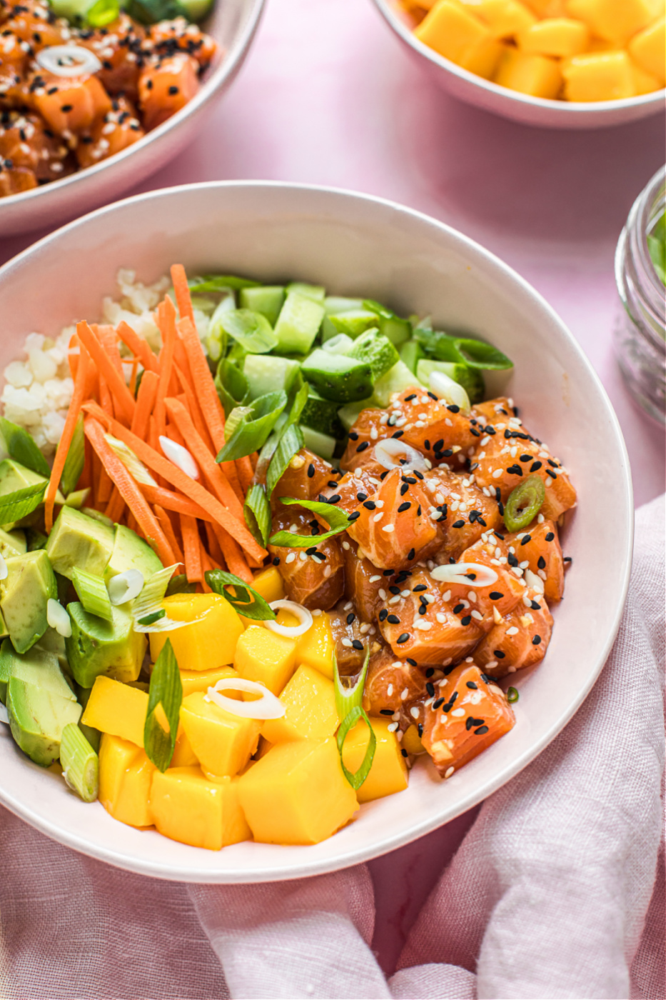

< go back
Salmon Poke Bowl

Description:
Healthy & easy to prepare, the perfect selection of high protein and carbs.
Ingredients:
- 1 pound of sushi-grade salmon
- 2 tablespoons of fermented tamari or coconut aminos
- 1 teaspoon of sesame oil
- 1 teaspoon of coconut vinegar
- 1 glove of garlic, minced
- 1/4 of teaspoon raw honey
Toppings
- Avocado cut in cubes
- cucumber, cut into small cubes
- Shredded Carrots
- Riced Cauliflower
- Green Onion, chopped
- Mango, chopped
Steps:
- Cut the fish into small bite-size cubes and placer them in a shallow bowl.
- Whisk the tamari, sesame oil, coconut vinegar, garlic and honey in a small bowl and pour over the fish.
- Toss the fish gently so the marinade is incorporated.
- Cover and place in the fridge to marinate for 30 minutes.
- After the fish has marinated, serve with the toppings of your choice.
- Decorate with your toppings.